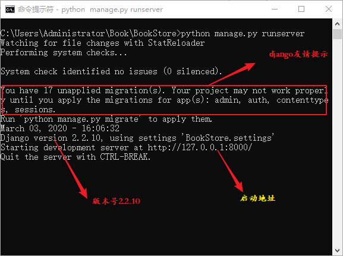
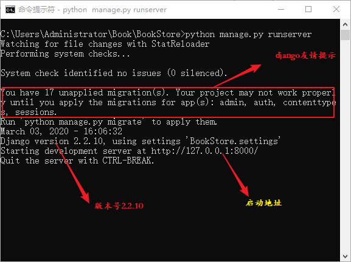
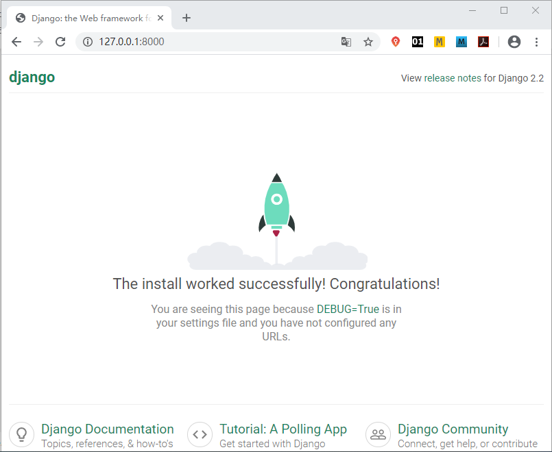
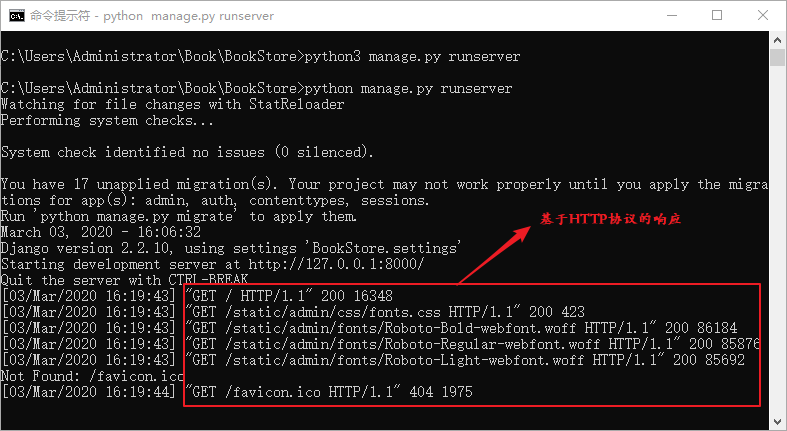
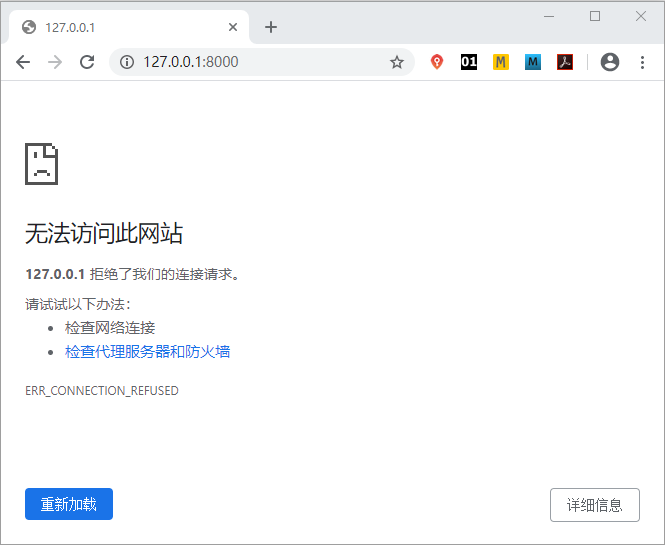

如何启动Django项目详解
我们使用 django-admin 命令成功创建项目后，我们要如何启动这个项目呢？本节的学习目标是能够通过本地回送地址 127.0.0.1 成功访问 BookStore 项目。

图1：Django项目启动命令
在浏览器地址栏输入 http://127.0.0.1:8000 进行访问，如下图所示：
访问成功后，我们可以看到 CMD 命令行也存在变化，如图所示：
如果是在局域网内，那么如何让局域网内的其他电脑访问你的 Django 项目呢？我们可以使用如下命令来启动项目：
通过本节讲解，我们实现了如何用本地回送地址访问 Django 项目目的。下一节，我们将对 Django 项目的重要配置文件 settings.py 做详细的介绍。
1. 启动项目并实现访问
在 CMD 命令行工具中，执行 cd 命令进入 Book/BookStore 目录下，通过《Django创建第一个项目》一节，我们知道在 BookStore 子目录下有一个 manage.py 文件，而这个文件的主要作用之一就是用来启动项目的，所以必须和 manage.py 文件处于同一个路径下才可以执行启动命令，启动项目的命令如下所示：python manage.py runserver
runserver 方法是调试 Django 时经常用到的运行方式，它使用 Django 自带的 WSGI Server 运行，主要在测试和开发中使用。执行完命令后，如下图所示表示启动成功。
图1：Django项目启动命令
提示：若是 Linux 或者 Mac 系统执行 python3 manage.py runserver
成功启动后，在该目录下会生成 Django 自带的数据库文件 db.sqlite3，这是 Django 默认自带的轻量级数据库。对于红色方框标住的部分，它是 Django 给的警告信息，后面会做详细的讲解。通过图 1 可以得到很多信息点，首先 Django 告诉我们如何访问项目，通过 http://127.0.0.1:8000 访问创建好的项目，8000 是 Django 的默认端口号。最后如若想退出运行状态，可以通过 CTRL+C 来终止。在浏览器地址栏输入 http://127.0.0.1:8000 进行访问，如下图所示：

图2：Django 项目访问界面
图2：Django 项目访问界面
提示：注意项目成功运行后，不要关闭运行命令的 CMD 窗口，否则将访问失败。
当你在地址栏回车的一瞬间，若出现了如图 2 所示的界面后，那么恭喜你，表示项目的骨架已经搭建完成了。其实你会发现我们只是用了一个启动命令，就实现一个站点的访问功能，这就是 Django 框架的优势所在，Django 框架依靠创建项目时生成的配置文件，从而构建了自身功能的完整性。访问成功后，我们可以看到 CMD 命令行也存在变化，如图所示：

图3：CMD命令行的HTTP响应
当我们在浏览器地址栏输入网址并确认访问后，就表示对项目服务端发送请求，服务端接收到请求后，会返回相应的页面。结合 HTTP 协议的相关知识，GET 方法表示从服务器获取资源，200 响应码表示请求成功。项目启动后，服务端开始运行，如果关闭启动项目的 CMD 命令行窗口，就表示服务端关闭，此时在浏览器地址栏输入本地会送地址并进行访问，会得到如图 4 所示的结果：图3：CMD命令行的HTTP响应

图4：无法加载网页页面
所以用来启动项目的 CMD 命令行窗口一般都处于运行状态，这样在项目开发过程中就可以实时进行测试或者调试代码。图4：无法加载网页页面
1) 启动项目命令介绍
我们使用如下命名启动了项目：python manage.py runserver
Django 的默认启动端口是 8000，当然也可以选定其他端口来启用。比如，你想在你的计算机上启动多个 Django 项目，那么就需要多个端口启动不同的项目，否则就会出现端口重用的问题，那么如何通过指定端口号启动项目呢？我们可以使用如下命令格式：python manage.py runserver 6000
上面的命令表示的是以 6000 端口启动项目。如果是在局域网内，那么如何让局域网内的其他电脑访问你的 Django 项目呢？我们可以使用如下命令来启动项目：
python3 manage.py runserver 0.0.0.0:6000
2) manage.py文件子命令
我们可以执行manage.py help命令查看 manage.py 文件的相关子命令:C:\Users\Administrator\Book\BookStore>manage.py help Type 'manage.py help后面章节如果用到相关的命令，我们再对其进行讲解。' for help on a specific subcommand. Available subcommands: [auth] changepassword createsuperuser [contenttypes] remove_stale_contenttypes [django] check compilemessages createcachetable dbshell diffsettings dumpdata flush inspectdb loaddata makemessages makemigrations migrate sendtestemail shell showmigrations sqlflush sqlmigrate sqlsequencereset squashmigrations startapp startproject test testserver [sessions] clearsessions [staticfiles] collectstatic findstatic runserver
通过本节讲解，我们实现了如何用本地回送地址访问 Django 项目目的。下一节，我们将对 Django 项目的重要配置文件 settings.py 做详细的介绍。
关注公众号「站长严长生」，在手机上阅读所有教程，随时随地都能学习。内含一款搜索神器，免费下载全网书籍和视频。

微信扫码关注公众号